Speakers
Ed has been a software developer for about 20 years. He is currently keeping busy learning how to play League of Legends, writing absurdist ditties about his peers' anniversaries at work, and nibbling away at Go, Rust, Vagrant and ever more AWS services to use on his projects for the DarkNet. Secretly, he is learning more about board design and writing software on the Teensy platform for funsies.
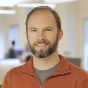
Matt Ahrens co-founded the ZFS project at Sun Microsystems in 2001, designed and implemented major components of ZFS including snapshots and remote replication, and helped lead Sun's ZFS team for 9 years. Matt is now a software engineer at Delphix, where he leads a team working on ZFS for Delphix's database virtualization appliance. He continues to develop ZFS code, as well as coordinating open-source ZFS development across companies and platforms.
In 2013, Matt founded the...
Technology lover, gamer and developer-in-training.

Rami is the DevOps engineer on the Public Cloud team at Workday where he works on building, deploying and managing Workday services and infrastructure on AWS using Cloud Native technologies.

Jono Bacon is a leading community manager, speaker, author, and podcaster. He is the founder of Jono Bacon Consulting which provides community strategy/execution, developer workflow, and other services. He also previously served as director of community at GitHub, Canonical, XPRIZE, OpenAdvantage, and consulted and advised a range of organizations including Huawei, GitLab, Sony Mobile, Deutsche Bank, HackerOne, and others. He is the author of the critically-acclaimed The Art of Community, is...
Martin has been using Free Software for more than 20 years. He has lived and was active in the local Free Software community on four continents. He lived in Los Angeles once and even presented at LUG Fest IV, the predecessor to SCALE in 2001.
He eventually settled in China where he now lives with his family, running a small Web Development Shop. He continues to be active in the Free Software community. He was running the Beijing GNU/Linux User Group for four years and now mentors his...

Lori joined her first Internet startup as a senior UNIX system administrator at a company that eventually went public. This got her hooked on the thrilling growth and success process and eventually she started an international executive consulting practice. In 2017 she co-founded the ShellCon infosec conference in Southern California and developed RaiseMe, a unique career development effort for nonprofits. RaiseMe has successfully helped people re-career into their first infosec engineering...
Kaitlyn is an Integrated Marketing Specialist at The Linux Foundation, focused on developer outreach, and awareness and adoption of cloud-native technologies across a variety of channels including the Cloud Native Ambassador Program. Prior to joining The Linux Foundation, Kaitlyn worked as a Community Manager, specializing in developer experience and marketing for open source projects at Stormpath (now Okta). She worked to build Stormpath’s developer following through community events and...

Orv Beach is a long-time Linux user, and has been a ham radio operator for even longer (license callsign W6BI). He's an ARRL Technical Specialst, and the Training Chair for the Southern California Linux expo. He's deeply involved in the build-out of the local ham radio "Internet" using off-the-shelf wireless equipment.
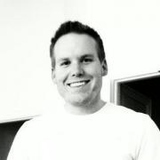
Will Bengtson is senior security engineer at Netflix focused on security operations and tooling. Prior to Netflix, Bengtson led security at a healthcare data analytics startup, consulted across various industries in the private sector, and spent many years in the Department of Defense. Bengtson is on the BSidesSF and Bay Area OWASP leadership team. Bengtson contributes to numerous open source projects and has spoken on topics of security across the world.

Josh Berkus spends his time messing around with containers, automation, and community-building for Red Hat Inc. Prior to that, he spent nearly two decades working on PostgreSQL. From his home in Portland, he cooks, makes pottery, and looks after a cat.
Nathan has been working with the XBMC community in one form or another since 2008. Nathan is endlessly interested in topics that relate to home entertainment, personal entertainment, and the ongoing battle for eyeballs being waged across a multitude of screens large and small.
Zaheda Bhorat is the head of open source strategy at AWS. She has been instrumental in growing the AWS Open Source team and contributions. A computer scientist, Zaheda was one of the co-creators of Google's Open Source Program Office and several successful programs including Summer of Code. She also brings a deep understanding in open standards from her work as head of open standards at Google, and as senior technology advisor for the Government Digital Service, UK Cabinet Office. At...
John Bonesio has over 25 years in software development. He has worked in systems level programming from large servers to small embedded real-time devices. John's experience in the Linux kernel includes working on file systems, raid sets, network drivers, startup code for ARM and PowerPc including device tree support, and DMA drivers. John is an international trainer for the Linux Foundation since 2011.
He also has other endeavors which include being an author and a radio show host....
Silvia Botros is a Principal DBA at Sendgrid. Her mission is to deploy and maintain various MySQL datastores that support the mail pipeline and other products that SendGrid offers and to drive MySQL designs from inception to production. Delivering millions of emails a day for household companies like Yelp, Spotify, Ebay and Air BnB. Follow Silvia's opinions on MySQL, Web operations, and various topics on Twitter @dbsmasher and on her blog dbsmasher.com
David is a Sr. Engineer at SaltStack,Inc and in a previous life was an IT Analyst in government. David has a passion for making technology work for people and businesses and Salt is his favorite tool for making technology bend to his will.
Have 10 US patents on mobile devices. Will get an 11th patent in Dec 2017. Full time inventor. My startup just got a blockchain patent and in Dec it will get an anti-ad blocker patent. The startup offers brands for mobile users to interact with other mobile users via apps. The brands are independent of the apps.
Cofounded Metaswarm (antispam). Cofounded Enteractv.com around a portfolio of 9 patents on mobile devices and electronic barcodes.
PhD theoretical physics Caltech.
Brian Bouterse is a Principle Software Engineer at Red Hat. He is a developer on Pulp which is written in Python and deploys Python software among other types (rpm, puppet, docker, etc). He also is a contributor to the Kombu project. Brian loves open source. He lives in Raleigh near NCSU with his wife Katie and his cat Schmowee.

Jason Brooks is a software analyst with Red Hat, in the company's Open Source and Standards group. Previously, Jason spent 12 years as an analyst and editor with eWEEK Labs, testing and writing about enterprise IT, with a particular focus on Linux and open source software. Jason lives in San Francisco, California, with his wife and two sons.
Kyle is an accomplished and dynamic leader with more than 17 years of experience in building enterprise-class software solutions. He is a versatile and entrepreneurial leader with a proven ability to build and lead high-performing teams of professionals to execute technical and strategic objectives.
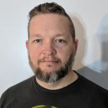
After installing Linux on his old i386 from a CD in the back of a Linux book he was given in 1995, Clint went on to be a Linux and open source power user. Splitting career time between software development and web scale operations gave Clint early insight into what is now known as the DevOps culture. Since then Clint has worked for Canonical on Ubuntu Server, HP on Helion OpenStack, IBM on OpenStack and BlueMix, and at GoDaddy bringing CI/CD and heavy automation to management of a 100,000+...
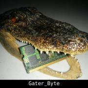
Starting with DEFCON 17, and SCALE12x I discovered the InfoSec/Hacker Community and Ever since, I have been finding ways to give to back to this amazing community. I enjoy mentoring and teaching others about security. In the last 5 years I have participated as a content creator and User Relations Lead at DCDARK.NET. I co-founded a local Hackerspace/Holon called OSSEM, which run sub-groups including a Local Linux User Group. I also like taking long walks while wardriving, and working with...
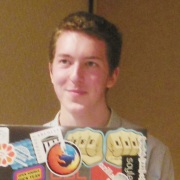
Elijah graduated from Oregon State University in the Fall of 2017 with a degree in Computer Science and a focus in Mathematics and Security.
He has worked at the OSU Open Source Lab, CoreOS, and Nordstrom wearing hats like developer, documentarian, course teacher, and devops engineer.
Despite school he made time to present at conferences like SCALE, SeaGL, Write the Docs EU, and BeaverCat BarCamp on topics like Kubernetes, Git, Email, and Blender 3D.
In his free time Elijah...

Lee Calcote is an innovative product and technology leader, passionate about developer platforms and management software for clouds, containers, functions and applications. Advanced and emerging technologies have been a consistent focus through Calcote’s tenure at SolarWinds, Seagate, Cisco and Pelco.
An advisor, author and speaker, Calcote is active in the tech community as a Docker Captain and Cloud Native Ambassador.

Education Outreach team lead at Red Hat. Red Hat employee since 2001. Co-author of "Raspberry Pi Hacks" (O'Reilly, 2013). Formerly Fedora Engineering Manager, Fedora Packaging Committee Chair, Fedora Board Member, Fedora Engineering Steering Committee Member. In my spare time, I enjoy gaming, geocaching, pinball, hockey, and science fiction.

Colin Charles is the Managing Consultant at GrokOpen. Previously, Colin was on the founding team of MariaDB Server, and has been around the MySQL ecosystem including being an early employee at MySQL, and worked actively on the Fedora and OpenOffice.org projects. Colin has been a MySQL user since 2000. He's well known within open source communities, enjoys building business and market entry in APAC and has spoken at many conferences.

Pamela S. Chestek is the principal of Chestek Legal in Raleigh, North Carolina. She counsels creative communities on open source, brand, marketing and copyright matters. Prior to returning to private practice, she held inhouse positions at footwear, apparel, and high technology companies and was an adjunct law professor teaching a course on trademark law and unfair competition. She is a frequent author of scholarly articles, and her blog, Property, Intangible, provides analysis of current...
Software developer for networking equipment specialized in networking and security. Community builder. VMware vExpert 2015-2017
Tennille Christensen is an attorney who specializes in advising start-ups on intellectual property issues and negotiating and drafting technology-related transactions. Tennille first entered the practice of law as a patent agent. However, she was constantly reading about and fascinated by non-patent-prosecution legal issues as well. One of the biggest areas that interested her, software copyrights and legal issues associated with the open source software community, is the reason she became...

Justin Colannino focuses his practice on patent, copyright, trademark, and trade secret litigation—particularly in the fields of computer hardware, software, and networked services. Justin also advises clients regarding open source software development, including open source license compliance. Justin has an active pro bono practice. In that capacity, he advises non-profit free and open source software projects on all aspects of open source development.
Day Job: VP of Engineering for a large software development company.
Professional history: Red Team lead, Security Researcher, and 15+ years in the online video game industry.
DarkNet: Been apart of the DefCon Darknet for 4 years, 3 years as the lead for badge firmware and significant contributor to the server side game code.
Passion: Darknet, anything and everything security related, Tinkerer of electronics
Former musical theatre actress and Hackbright Academy graduate, Chloe is now a Developer Evangelist at Sentry (an open source error tracking software). Pre-Hackbright, she spent her nights and weekends performing in the Bay Area as a singer/actress and worked in tech by day. To support her theatre career, she started to learn to code on her own through online resources. Perhaps the only engineer you'll meet who has been in "Hairspray", "Xanadu", and "Jerry...
Sarah Conway is a software engineer at Crunchy Data Solutions, Inc and is a developer on the Crunchy Container Suite and PostgreSQL Operator projects. Additionally, she is an active participant and volunteer in the PostgreSQL community through developing and maintaining various Postgres community websites, participating in the PGUS Diversity Committee, and being on the PostgresOpen SV operations committee for four years.

Working with PostgreSQL since 1999. PostgreSQL Major Contributor.
Currently maintains the PostgreSQL JDBC driver.
Likes to test his knowledge of physics by driving his car on a racetrack.
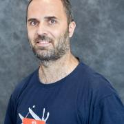
Peter is a system engineer working as evangelist at One Identity, the company behind the syslog-ng logging daemon. He helps distributions to maintain the syslog-ng package, follows bug trackers, helps syslog-ng users, and talks regularly about sudo and syslog-ng at conferences (SCALE, FOSDEM, Libre Software Meeting, LOADays, etc.). In his limited free time he is interested in non-x86 architectures, and works on one of his PPC or ARM machines.
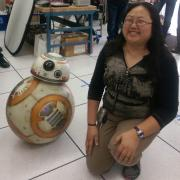
Lan Dang is an Operations Engineer with the Jet Propulsion Laboratory, specializing in science data systems operations and large scale data processing. She spends most of her time on the command line of various remote Linux systems. Her favorite tools are screen, awk, vim, and git. Her contributions to open source focus on community-building and evangelism. In her spare time, she is active in the San Gabriel Valley tech community as a leader of the SGVLUG and its sister group, the SGVHAK...
Pat David is a member of the GIMP team who has written extensively about using GIMP for photo processing (along with other software and techniques).
A few years ago he found the community and resources lacking for doing photography with Free Software. What was available was low-effort and low-quality mostly. In an attempt to address this, he created PIXLS.US...

Phil Dibowitz has been working in systems engineering for 15 years and is passionate about scaling systems and open source. He is currently a lead on the Operating Systems team at Facebook, responsible for the bare metal OS itself, configuration management and related infrastructure. Previously he worked on the traffic team automating load balancer configuration management as well as designing and building the production IPv6 infrastructure. Prior to Facebook, he worked at Google managing...
Sandeep started coding and creating websites when he was 12 and hasn't stopped. He is passionate about building easy-to-use products people love. Before Google, he founded an IoT startup in agriculture and developed educational HTML5 games. At Google, Sandeep's goal is to make cloud easy and help developers create the next big thing. He works on cloud native solutions such as Docker, Kubernetes, gRPC, and Istio. Sandeep loves video games, making music, and martial arts, and has...
Cecilia Donnelly is an Open Source Strategist at Open Tech Strategies. She has been consulting on open source best practices since 2014. Currently, she manages projects that have to do with screening health care providers, installing smoke alarms, and tracking volunteer engagement.
Cecilia lives and ice skates in Minneapolis.

Jennifer Dumas is Vice President of Legal at Chef Software Inc. in Seattle. She brings nearly twenty years of solving complex legal issues for high growth, disruptive companies to her role as Chef's principal legal advisor. She joined Chef from B-Line, LLC, a financial services company, where she was general counsel. Prior to that, she was the global contracts lead at Avanade Inc., where she directed and managed complex commercial agreements and gained a reputation for speedy,...

Hello! My name is Christer. I build cool things. I also write, talk and teach about technology. My background has focused on working within the Linux and FreeBSD open source communities. I've specialized in server automation & configuration management, writing documentation and occasionally I make time for programming. I aspire to be the definition of "remote employee" while exploring the Western United States in my converted Promaster. What I do best is help others see how things could...
Scott Emmons works on the Performance and Operating Systems Engineering team at Netflix, helping build, upgrade, and maintain the Linux image used by over one hundred thousand cloud servers. Scott has been working with Unix-like systems professionally for over 25 years, with titles including Systems Programmer, System Administrator, Developer, Architect, and Performance Engineer.

Ron Evans is an award-winning software developer and expert in robotics/IoT/computer vision who is very active in the free and open source community. He has helped clients such as AT&T, Intel, and Northvolt solve some of their most difficult technical and business problems.
Ron has spoken at conferences such as MakerFaire, OSCON, GopherCon, FOSDEM, and the MIT Technology Review. He has been profiled in the press by Wired, Fast Company, and The New York Times. Ron has published...

Charles Finley is President of Transformix which specializes in legacy application migration and modernization. He has over 40 years experience working in a number of different computing environments. Systems range from legacy COBOL and green screen based applications to cloud, web and mobile applications.
Senior Database Engineer with Crunchy Data Solutions. Author of several popular 3rd-party PostgreSQL tools such as pg_partman, mimeo, & pg_extractor
Rebecca Fitzhugh is the Principal Technologist at Rubrik where she researches and evaluates emerging technologies to define and communicate long-term technical strategies. Prior to joining Rubrik, she freelanced as a consulting architect for 6 years. During that period, Rebecca worked with various federal agencies, foreign government, enterprise, and service provider customers across multiple verticals. She began her career in the US Marine Corps, acting as a data systems analyst.
__q_itok=7CIPtq3d.png)
David Fligor is a co-founder and partner at the law firm of Progress LLP in Palo Alto, California. David regularly helps clients resolve intellectual property and contract disputes and advises clients on intellectual property ownership, licensing, compliance and enforcement. In 2016, David led an enforcement effort for the author of a GPLv2-licensed program against an embedded device manufacturer that had failed to comply with GPLv2 license conditions. The effort successfully achieved...

Richard Fontana is Senior Commercial Counsel for Products and Technologies at Red Hat. In addition to serving as Red Hat's lead open source counsel, Richard provides general legal support for Red Hat's engineering and R&D organizations. Richard is a frequent public speaker on topics at the intersection of open source, law and policy. He is also a board member of the Open Source Initiative.
Stephen Frost is a PostgreSQL Major Contributor and Committer who implemented the PostgreSQL role system and column-level privileges, and who has made contributions to PL/PgSQL, PostGIS, the Linux kernel, and Debian. He has broad experience with the PostgreSQL authentication and authorization system, Multi-Version Concurrent-Control (MVCC), performance tuning (both system-wide and for specific queries), hacking on PostgreSQL itself, the PostgreSQL community, and PostGIS.
Michelle Greer Galloway has been an associate, partner and is currently of counsel to the Cooley Litigation department and its IP group. Her practice focuses on patent litigation. She also counsels clients in information governance and e-Discovery.
She currently serves as Chair of the ABA Intellectual Property Section, Ethics and Professional Responsibility Committee and Chaired the ABA Task Force regarding USPTO proposed disciplinary rule changes. In 2013, she was awarded the ABA...
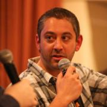
Jeremy is the founder of LinuxQuestions.org, Open Source Programs Lead at Datadog, community moderator at Opensource.com, and a presenter on Bad Voltage. He's an ardent but realistic open source advocate.
Justin is a engineer building communities and solutions.

Richard Gaskin is the owner of Fourth World Systems, a software design and development consultancy in Los Angeles. Since founding the company in 1994, he's developed dozens of commercial and open source applications used by a wide range of organizations, including FedEx, AOL, the US Library of Congress, and thousands of hospitals and universities around the world.
Although he started his career with Mac OS, Richard has since delivered applications for Irix, every version of...
Michael Gat was a Tech Program Manager at AWS, where he managed capacity and efficiency programs for the Application Networking organization, and later worked for customer billing. Previously, Michael consulted to midsize businesses transitioning to cloud architectures and was a developer of financial systems.
Michael has a BA in CS from Columbia and an MBA from UCLA. He serves on the SCaLE Program Committee, lives in Seattle, and attends to the whims of multiple cats.
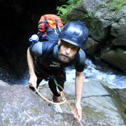
I am a PhD candidate at Macquarie University in Sydney, Australia, where I work on finding exoplanets using low-cost, over-the-counter hardware for Project PANOPTES (www.projectpanoptes.org). After spending over a decade in industry building (mostly PERL) web applications, I decided to leave that all behind and pursue my childhood interest in astronomy. Luckily these days astronomy is mostly all about software development. When given some free...

Jeff has worked with free software since the mid-1990s and has practiced the discipline of large-scale network management since 2000. His current role as Principal Technical Product Manager at The OpenNMS Group lets him continue both these pursuits.
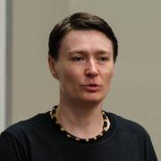
Having crafted professional, enterprise-level software with open source technologies since 2003, Georgiana is living proof that geek girls are an asset to any team. She loves developing complex, large-scale applications with a strong emphasis on performance, as well as mentoring teammates in achieving craftsmanship. Georgiana has experience in every aspect of the lifecycle of software development and is hungry for more. In the past year, Georgiana started a PhD in Systems Engineering,...
Ryan is a seasoned marketing and creative professional. He is the founder and creative director of Freehive (https://freehive.com), an experienced creative agency powered by free and open-source creative software that works exclusively with artists, illustrators, designers, and developers who share a passion for these tools. Prior to starting Freehive in 2010, he was a successful marketing executive and creative director at a consumer goods manufacturer and...

Ted Gould is currently an engineer at Axiom building self-hosted monitoring solution. He is the chairman for Texas Linuxfest 2019, a member of the Inkscape board, and an Ubuntu Member previously working on Ubuntu Phone. Ted has been speaking about Ubuntu and Open Source to a variety of audiences over the years from seminars at universities to conferences and user groups.

Gareth is a software developer at Saltstack and an occasional FLOSS Weekly cohost. Gareth lives in Southern California with his wife, where they are owned by several pets.
Eyal Gutkind is head of solution architects at Scylla. Prior to Scylla Eyal held product management roles at Mirantis and DataStax. Prior to DataStax Eyal spent 12 years with Mellanox Technologies in various engineering management and product marketing roles.Eyal holds a BSc. degree in Electrical and Computer Engineering from Ben Gurion University, Israel and MBA from Fuqua School of Business at Duke University, North Carolina.

Nathan Haines is an author, instructor, and computer consultant who fell in love with Ubuntu in 2005, and helped found the Ubuntu California Local Community Team to share that excitement with others. As the leader of the California team and a member of the Ubuntu Local Community Council, he works to help others support and share Ubuntu worldwide.
His mission to educate and excite people about Free Software and Ubuntu continues with his book, Beginning Ubuntu for Windows and Mac Users...
Andrew Hall is a co-founder of Hall Law, a boutique firm focused primarily on legal issues facing open-source software. Leveraging his technical background in computer science and electrical engineering with his well-rounded intellectual property law experience, Andrew provides counsel in strategy, policy implementation, and asset management to clients, including Fortune Global 500 companies.
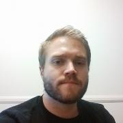
Usually skirting the line between dev and ops, Andrew is currently an SRE focusing on making developers more productive. He is always looking for ways to make things easier and more intuitive for others by building tools and services. He prefers to have his head in the clouds and is always looking for a fun new technology to tear apart and explore.

Nathan is a Site Reliability at Reddit, where he works to architect highly scalable and reliable systems that can be efficiently managed and observed. He has been involved with the open source community for nearly two decades, primarily through his roles as an Ubuntu and Debian GNU/Linux Developer and a member of the freenode IRC staff. Previously, he worked as a Developer Advocate/Software Engineer at Orchid Labs building an open marketplace for bandwidth on Ethereum, and as a Site...

der.hans is a Free Software, technology and entrepreneurial veteran. He is a repeat author for the Linux Journal with his article about online privacy and security using a password manager as the cover article for the January 2017 issue.
He is chairman of the Phoenix Linux User Group (PLUG), BoF organizer for the Southern California Linux Expo (SCaLE) and founder of the Free Software Stammtisch.
He presents regularly at large community-led conferences (SCaLE, SeaGL, Tux-Tage,...

John 'Warthog9' Hawley led the system administration team on kernel.org for nearly a decade, leading a team including four other administrators. His other exploits include working on Syslinux, OpenSSI, a caching Gitweb, and patches to bind to enable GeoDNS. He's the author of PXE Knife, a set of interfaces around common utilities and diagnostics tools needed by an average systems administrator, as well as SyncDiff(erent) a state-full file synchronizer and file transfer...

Jason Hibbets is a senior community architect at Red Hat which means he is a mash-up of a community manager and project manager designing programs for people to participate in communities. His current role involves building community interest for #EnableSysadmin--a watering hole for system administrators. He is the author of...
Rich has had the fortune to work for great organizations and with even better people throughout his career. He was an early-adopter of DevOps recognizing the opportunity to move Ops out from under just being a cost-center to a key contributor to help companies accelerate business objectives. A majority of his career has been building data-driven DevOps teams for SaaS in the online advertising space (Nativo, Fox, MySpace), but also has held roles within Corporate IT (Nestle and EMC...

Michael Hrivnak is a Principal Software Engineer at Red Hat. After leading development of early registry and distribution technology for container images, he became involved with solving real-world orchestration problems on Kubernetes. He now works on the Automation Broker and Operator SDK, projects that automate application management on Kubernetes by incorporating tools such as Ansible and Helm. Experienced in both software and systems engineering, Michael is excited to be writing software...
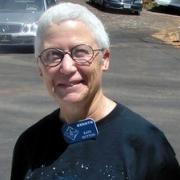
Kate Hutton, nicknamed the Earthquake Lady, Dr. Kate, or Earthquake Kate is retired a staff seismologist at the California Institute of Technology in Pasadena, California.

Ryan Jarvinen is a Developer Advocate at Red Hat, focusing on improving developer experience in the cloud native community. He lives in Sacramento, California and is passionate about open source, open standards, open government, and digital rights.
David Jordan is an engineer at System76. By day he develops new features for Pop!_OS, makes each product work well with Linux, and paves the way for System76's manufacturing efforts. By night he builds open source tools for filmmakers. He enjoys hacking on collaborative systems, cameras, embedded systems, and computer vision. When he's not building robots, writing software, or indulging his read/write passion for cinema, David writes "slightly" nerdy books. His current...

Elizabeth K. Joseph leads the Open Source Program Office for IBM Z (mainframes!). Previously, she spent time working on Apache Mesos, and four years as a systems engineer on the OpenStack Infrastructure team and six years on the Ubuntu Community Council and has held various roles in the Ubuntu community and is the co-author of The Official Ubuntu Book, 8th and 9th Editions. At home in San Francisco, she sits on the Board of Directors for Partimus.org, a non-profit in the Bay Area providing...
I have been contributing to open source software since 2010. After joining Red Hat in 2013, I have had the opportunity to contribute to multiple projects written in Python: Imagefactory, OpenStack Nova, and Pulp. I am interested in crafting tools that we all can use to improve the quality of software delivered to our users.
David is an R&D Engineer at Timescale. He focuses on performance optimizations and developing features and functionality, while ensuring the database remains easy to use. Previously he was a Data Engineer focusing mostly on PostgreSQL at Moat Inc., and before that worked at battery engineering and electrochemistry startups.

Jason Kridner is a software architecture manager for embedded processors at Texas Instruments Incorporated (TI). A 25-year veteran of TI, Kridner is also a founder of the BeagleBoard.org Foundation, maintainer of open-source development tools such as BeagleBoard, -xM, -X15, BeagleBone, Black, Blue, and the new ultra-tiny and ultra-low-cost PocketBeagle. Kridner participates in numerous coding and open-source mentoring/education efforts, including serving as an administrator for BeagleBoard....

Spencer Krum is a Developer Adovcate at IBM. He writes python (and recently go) applications to analyze esports and deploys them on kubernetes. Before that, he administered the development infrastructure for OpenStack and wrote a book on Puppet. He lives and works in Minneapolis. He likes cheeseburgers, tennis and StarCraft II.

Bradley M. Kuhn is the Policy Fellow and Hacker-in-Residence at Software Freedom Conservancy (SFC). Kuhn began volunteering in the software freedom movement in 1992 — as an early adopter of Linux and contributor to many FOSS projects including Perl. As Free Software Foundation (FSF)'s Executive Director from 2001-2005, Kuhn led FSF’s GPL enforcement and invented the Affero GPL. Kuhn was SFC’s primary volunteer from 2006–2010 and its first...
Ben Kuo (AI6YR) has been a longtime Linux enthusiast, as well as more recent ham radio operator, and is enthusiastic about building, fixing, and playing with all kinds of amateur radio gear, plus developing projects--both hardware and software--ranging from Raspberry Pi, Arduino, mesh networking, QRP radios, antennas, and embedded software. He also enjoys taking amateur radio outdoors, with Summits On The Air (SOTA) activations, hiking and backpacking with QRP. For his day job, he is the...
Levente is a systems software engineer, currently studying at Imperial College London for his bachelor degree, as well as working on low-level performance of mission critical systems in Chicago. Previously, he interned at Apple and at Red Hat, working on operating systems. An avid computer enthusiast, he created his own UNIX-like operating system kernel from scratch, capable enough to run GCC and various well-known utilities. His other interests include spreading the spirit of the Open...
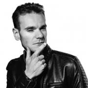
Currently Project Leader of the Debian GNU/Linux project and a member of Board of Directors for the Open Source Initiative, Chris is a freelance computer programmer, author of dozens of free-software projects and contributor to 100s of others.
He has been official Debian Developer since 2008 and is currently highly active in the Reproducible Builds sub-project for which he has been awarded a grant from the Linux Foundation's Core Infrastructure Initiative. In his spare time he is...
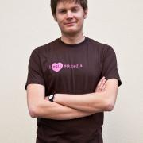
Stephen is Legal Director at the Wikimedia Foundation, where he advises on copyright, trademarks, governance, and other internet law and policy topics. Stephen is co-creator of CollabMark, a trademark guide for open source and free software projects. He is also an active contributor to open source, including a series of interactive visualizations of Wikipedia. Stephen’s main areas of interest are licensing, open science, and online platforms. Stephen graduated from the University of Nebraska...

Intending to become a programmer, Dustin got sidetracked and spent more time than he cares to admit doing theoretical physics and mathematics with no relevance to software. He's better now.
Some little-known facts about Dustin Laurence:
He first used a computer playing Colossal Cave Adventure and the
bootleg Fortran IV version of Zork over a glass teletype and an
acoustic modem.
His first good programming language was C. He lies and...
Nolan has been a full time Linux user since 1995. In a previous life, he co-founded Cumulus Networks, which builds a Linux distribution that powers the networks of many of the largest clouds and enterprise networks. Prior to that, he did early work on Virtualization at VMware and a series of startups. He is into hardware, software, and high-power experimental rocketry.

Tom is an artist who has been using and making various open source tools to help produce his artwork for almost 20 years. For instance, he created desktop publishing software called Laidout to produce his comic books, and is now exploring the many aspects of video game production. He is based in Portland, Oregon, USA.
Matt Lee is a British artist, hacker and filmmaker. His first feature length movie, "Orang-U: An Ape Goes To College" was made using 100% free tools. He lives in Boston where he works on web standards and is currently in pre-production on Orang-U 2: Monkey Business.
Student at Berkeley City College and independent contractor. Programming language design enthusiast, game development enthusiast, and all around Rust enthusiast. Linux user for five years and Rust user for two years.
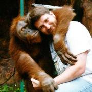
Developer Advocate for Flutter and Dart. Before Flutter, Wm worked on distributed user interfaces, mapping, and travel. Before Google, Wm started several successful computer companies. He wrote a seminal book on declarative computer languages and another book on 3D computer graphics. Wm created the first computer generated hologram. He is also an avid traveler and loves to play music with friends. http://leler.com/wm/resume.html
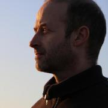
Franck Leveneur is a Sr. Mysql DBA / Data Architect working for Global Cash Card, an A.D.P. owned company. Mr. Leveneur has 20 years of experience with databases, including 10 years with MS-SQL and 9 years with Mysql, database modeling and optimization. He has also been working on big data projects in the past 2 years using various technologies. He currently teaches a Data Management class at UCLA Anderson for a Master of Science in Business Analytics. Mr. Leveneur has been involved in...
Todd is the creator of multiple open source technology conferences and meetups, including All Things Open and the Open Source 101 conference series. All Things Open is now the largest open source/tech/web event on the East Coast of the United States. In addition to conferences, he's worked with numerous nonprofits, educational institutions and elected officials to encourage technology education curriculum creation and adoption. He regularly speaks at conferences and events, and to...

Gina Likins has been working in internet strategy for more than 20 years, participating in online communities for nearly 25, and working in open source for more than three. Back in 1994, she presented her first talk about the internet, called "Netiquette: How to avoid getting flamed online," and she's spent the intervening time developing her own theories about how and why communities go sour (or conversely, grow strong).
Aside from her interest in the internet,...

Federico Lucifredi is the Product Management Director for Ceph Storage at Red Hat and a co-author of O'Reilly's "Peccary Book" on AWS System Administration. Previously, he was the Ubuntu Server product manager at Canonical, where he oversaw a broad portfolio and the rise of Ubuntu Server to the rank of most popular OS on Amazon AWS. A software engineer-turned-manager at the Novell corporation, he was part of the SUSE Linux team, overseeing the update lifecycle and...

Bryan Lunduke writes books about Linux. Then he writes articles about Linux. Also podcasts about Linux. Rumor has it he also does marketing work related to Linux. Linux, Linux, Linux. Plus Linux.
Greg’s career spans more than 25 years and includes experience in business, operations, manufacturing, and leadership. He holds two master’s degrees: a master’s in geography from South Dakota State University, and a master’s in computer science from the University of Chicago.
Greg spent much of his career implementing enterprise technology suites for government and commercial organizations. Between 1995 and 2005, Greg worked for county government, consulting, and commercial...
Grant McAlister is a Senior Principal Engineer at Amazon Web Services where he works on RDS - Amazon's Relational Database Service, the service he helped found 9 years ago. Prior to AWS, Grant was responsible for the performance, scalability and availability of Amazon's databases. Before joining Amazon.com in 1999, Grant worked as an Independent Database Consultant and as a Senior Principle Consultant for Oracle Corporation. He earned a B.S. in Computer Science at the University...

Software architect at Symas. Apache Directory PMC Chair. Previous member of the OpenLDAP Engineering Team.
Scott has been an avid PostgreSQL user, DBA, Developer & contributor for over 12 years. His focus is on production, designing systems that allow "always-on" maintenance, carrier-grade reliability and ultra-wide scalability.
George Miranda is Director of Community for Buoyant, makers of Linkerd and Conduit. He made a career working in WebOps for over 15 years at a variety of startups and enterprises before moving into the world of working with open-source software vendors. He's taken roles at companies that believe in simplifying the ever-increasing complexity of running internet applications at scale. Prior to Buoyant, he was a developer advocate at Chef Software Inc, using config management and automation...
Bruce Momjian is co-founder and core team member of the PostgreSQL Global Development Group, and has worked on PostgreSQL since 1996. He has been employed by EDB since 2006. He has spoken at many international open-source conferences and is the author of PostgreSQL: Introduction and Concepts, published by Addison-Wesley. Prior to his involvement with PostgreSQL, Bruce worked as a consultant, developing custom database applications for some of the world's largest law firms. As an...
Drew is currently part of the Mender.io open source project to deploy OTA software updates to embedded Linux devices. He has worked on embedded projects such as RAID storage controllers, Direct and Network attached storage devices, bootloaders and operating systems. Drew has spoken at various conferences, including Embedded Systems Conference and All Systems Go.
He has spent the last 7 years working in Operating System Professional Services helping customers develop production...

Joe is a security researcher who loves to experiment with embedded devices, signals, and really anything with electrical signals. He lives in a server room and would love to be let out from time to time. When not stuck in a server room or being electrocuted he also dabbles with cloud research. He is currently a full time student at California Polytechnic Pomona.
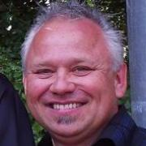
JT Nelson enjoys being an idealist and synthesist by changing the world and making it a better place for all. He has a long and storied reputation for lurking in the shadows effecting disruptive technologies and methods in the digital visual media, biomedical and presentation industries. He has helped bring products to market that are cutting-edge, the first of its kind and years ahead of the competition.
His current foci are game-changing Open Source Software development, Hollywood...

Deb Nicholson is a free software policy expert and a passionate community advocate. She is the Director of Community Operations at Software Freedom Conservancy where she supports the work of its member organizations and facilitates collaboration with the wider free software community. Formerly, she has served as the Community Outreach Director for the Open Invention Network, a shared defensive patent pool on a mission to protect free and open source software and the Membership Coordinator...

Alan started programming when he was four years old on his dad's Commodore 64 and began using Linux in the mid-90s while in high school. He currently works for SoftIron, a Silicon Valley startup making the world's finest appliances for the data center, including scale-out storage hardware running Ceph. Alan is the creator and maintainer of M-Stack, a free and open source USB device stack for PIC micocontrollers, and HIDAPI, a cross-platform host-side USB HID library; and is a...
JMP specializes in bringing complex technology portfolios to market, whether an individual, a small group, a large community or a multinational corporation. A Linux user, Debian Developer and open source enthusiast for over 15 years, he's particularly passionate about strategic aspects of open source including cloud, business models and innovation/differentiation. JMP is originally from Venezuela, has been an expat for over 10 years and currently lives in the Pacific Northwest.
Michael has been working with Linux and other Open Source technologies for over 10 years. He has been part of the OpenStack community since 2013, acting as a Moderator on Ask OpenStack. Currently he is a Developer Advocate for IBM, focusing on esports and cloud native applications.
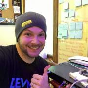
Hank’s two passions are technology and theatre and bringing them together drives him towards a borderline obsession on creating entertaining presentations, labs and demonstrations that breakdown complex technology topics for audiences. After spending several years working on and behind the scenes on stage productions, what started as a hobby turned to a profession when Hank entered the IT industry with a focus on web and database development and engineering. Drifting from development into...
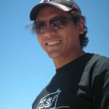
Alejandro is a performance engineer at Verizon Digital Media Services. His team focuses on the software and hardware run on the CDN. Prior to Verizon, Alejandro spent 7 years in graduate school at the University of Arizona. His research focus was denial-of-service attacks on wireless networks and privacy protection of wireless communications. He is also a Math and Electrical Engineering enthusiast and spends a good part of his free time trying to remember what he learned in college.
Brian Proffitt is currently the Senior Manager, Community Outreach team for Red Hat's Open Source Program Office. A long-time member of the free and open source software community, Brian is the author of several books on Linux, iOS, and other odd operating systems, as well as former technology journalist from ReadWrite, ITworld, LinuxPlanet, and Linux Today.

Corey is the Chief Cloud Economist at The Duckbill Group, where he specializes in helping companies improve their AWS bills by making them smaller and less horrifying. He also hosts the "Screaming in the Cloud" and "AWS Morning Brief" podcasts; and curates "Last Week in AWS," a weekly newsletter summarizing the latest in AWS news, blogs, and tools, sprinkled with snark and thoughtful analysis in roughly equal measure.
Sriram Ramkrishna spent over 22 years working in open source communities building coalitions to solve problems, working as a connector between projects and help supporting open source communities. Sri uses his background in his role as Principal Ecosystems Engineer for ITRenew/Sesame in corporate open source communities like the Open Compute Project, CNCF, and the Linux Foundation.

Kyle Rankin is a security and infrastructure expert with over two decades of professional Linux experience. He is the author of How To Write A Tech Book, The Best of Hack and /: Linux Admin Crash Course, Linux Hardening in Hostile Networks, DevOps Troubleshooting, The Official Ubuntu Server Book, Third Edition, Knoppix Hacks, 2nd Edition, and Ubuntu Hacks, among other books. Rankin was an award-winning columnist and tech editor for Linux Journal, and speaks frequently on Free and Open Source...
Roi Ravhon is DevOps Team Leader at Logz.io. Before that, he was a DevOps engineer in the Israeli military intelligence. Roi writes, and talks, about DevOps, Docker, Kubernetes and the ELK Stack. Outside of work, he is a great enthusiast of beer and rock and metal music.
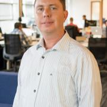
Tracy is an architect at Twistlock, with an extensive background in Linux system administration and security. Tracy's experiences at several enterprises and dotcoms focused on gaining rich knowledge of system hardening, intrusion detection, and log analytics, and compliance regimes like HIPAA, PCI, and FedRAMP. Located in San Diego, he is the president of the San Diego Computer Society and Kernel-Panic Linux User Groups and is an instructor at UC San Diego. At Twistlock he has been...

22-year old guy who is currently a Sr. Developer Support Engineer for Auth0, and member of the Ubuntu Community Council. Actively participating on the Ubuntu Project, loves photography and food.
Jonas Rosland is a community builder, open source advocate, blogger and speaker at many open source focused events. As Open Source Community Manager at {code}, he is responsible for the growth and prosperity of the {code} Community.
Nithya Ruff is the Senior Director of Comcast's Open Source Practice. Her charter is to drive common open source practices and strategy across Comcast. She is also Director-at-large on the Linux Foundation Board of Directors. She first glimpsed the power of open source while at SGI in the 90s and has been building bridges between hardware developers and the open source community ever since. She’s also held leadership positions at Wind River (an Intel Company), Synopsys, Avaya,...

In 2016, Guinevere Saenger transitioned from being a full-time professional pianist to a career in tech. To do so, she obtained a spot at the highly competitive Ada Developers Academy in Seattle, a year-long, tuition-free, bootcamp-style software development training program for women and nonbinary people making a mid-life career switch into tech. As part of her training, Guinevere interned at Samsung SDS on the Cloud Native Computing Team, where, after graduating in July 2017, she accepted...
Nuritzi is a founding member of Endless, a company that is focused on making software for the next billion computer users. At Endless, she manages the Ecosystem Team, which is in charge of building an open source community around Endless and helping to localize the product for new markets.
Nuritzi is also on the GNOME Foundation's Board of Directors, and is currently the Foundation's President. She is a core member of the GNOME Project's Engagement Team, where she is...
Karen M. Sandler is Executive Director of the Software Freedom Conservancy, the nonprofit home of dozens of essential free software projects. She is known for her advocacy for free and open source software, particularly in relation to the software on medical devices. She was previously the Executive Director of the GNOME Foundation. Karen co-organizes Outreachy (formerly Outreach Program for Women). She received an O'Reilly Open Source Award and is co-host of the oggcast "Free and...
Louis is an Architect in the Container and PaaS Practice Group in the Emerging Technology Practices Division at Red Hat. Louis focuses on OpenShift, Middleware and DevOps and has spent significant time helping businesses overcome their development & operations roadblocks with OpenShift at scale. When not working with customers, Louis is a contributor to the OpenShift Installer, OpenShift Docs and a few other projects. Louis has also spent time as a Senior Consultant, Enterprise...
Joerg Schad is a Distributed Systems Engineer at Mesosphere who works on DC/OS and Apache Mesos. Prior to this he worked on SAP Hana and in the Information Systems Group at Saarland University. His passions are distributed (database) systems, data analytics, and distributed algorithms and his speaking experience include various Meetups, international conferences, and lecture halls.

Randal L. Schwartz is a renowned expert on the Perl and Smalltalk programming languages, having contributed to a dozen top-selling books on the subject, and over 250 magazine articles. Schwartz runs a Perl and Smalltalk training and consulting company (Stonehenge Consulting Services, Inc of Portland, Oregon), and is a highly sought-after speaker for his masterful stage combination of technical skill, comedic timing, and crowd rapport. Schwartz hosts the successful FLOSS Weekly podcast,...
Stuart is a Licensed Extra Class Amateur Radio Operator (AG6AG), and participates in emergency and club activities in his local community.
He has been involved with open source since the early 90s, and spends his days showing companies how to integrate open source solutions into their network infrastructure, reducing their costs and improving their overall network security.
He currently participates in open source projects and user groups as well as spending his free time...

Ty works with SMBs to achieve compliance for PCI and SOC2 standards. He has been working in the industry for over 25 years as a programmer, systems architect, and manager of development, IT and DevOPs teams. He was a cofounder of Kagi, an e-commerce company based in the San Franciso Bay Area where he worked on Payment systems for 15 years. He was one of the original team members of LoopPay (a.k.a SamsungPay Boston) where he was a Director of Security and Compliance for 5 years. When he is...
Lifelong gadget junky with 70 and counting. Love hates Indiegogo and Kickstarter. Needs more time in a day and has a short attention span. Geeks out building research infrastructures and travels too much. Had been in the Linux world since Red Hat 4. And in the parallel universes since MS DOS 6, Windows 3.11 and NT. Lived to see Windows in a container. Wants to see a keyboardless computer that reads her thoughts and does not send her to an app help section. With the appropriate blockchain-...

Eduardo is an entrepreneur and software engineer. He is currently one of the Fluentd project maintainers and creator of Fluent Bit, a lightweight Logs and Metrics processor. He also is the founder of Calyptia (the Fluent company).

I have been working as a postgres DBA at OmniTI for almost 4 years. I completed my Masters in CS from University of Maryland in 2014, and current a Doctoral student researching data mining in cybersecurity.
Brian Six is a 20+ year veteran at SUSE/Micro Focus/Novell. As a Computer Science major, Brian has gone from developer to consultant to systems engineer. When he is not traveling for SUSE, he is either shuttling his grade school kids to their activities or walking his Avocado grove making sure the trees are happy. Mixing the tech world with family and the farm.
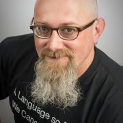
John is the VP of Technology for Infinity Interactive, a technology consultancy and bespoke software development shop. When he's not madly trying to keep up with the pace of change in Javascript development, maintaining Perl modules, or tweaking his Emacs config, he likes to play around with new languages like Swift and Rust and write about himself in the third person.
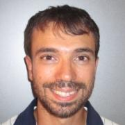
Stefano Stabellini serves as virtualization expert in a new dynamic team at Aporeto. Previously he was Senior Principal Software Engineer at Citrix, leading a team of Open Source engineers working on Xen Project. Stefano has been involved in Xen development since 2007, focusing on several different projects, spanning from Qemu to Xen and the Linux kernel. He created libxenlight in November 2009 and started the Xen port to ARM with virtualization extensions with Ian Campbell in 2011....

Dave Stokes is an open-source software and database fan. He has worked at companies ranging alphabetically from the American Heart Association to Xerox, has three college degrees, enjoys riding his Honda Goldwing motorcycle, lives in North Texas, and started with UNIX in the Version 7 days. He is the author of MySQL & JSON - A Practical Programming Guide, which is available at Amazon.com
Deirdré Straughan helps technologies grow and thrive through marketing and community. Her product experience spans consumer apps and devices, cloud services and technologies, and kernel features, with an emphasis on open source. Her toolkit includes words, websites, blogs, communities, events, video, social, marketing, and more. She has written and edited technical books and blog posts, filmed and produced videos, and organized meetups, conferences, and conference talks. You can learn more...
Cullen Taylor is a Developer Advocate at IBM focusing on Kubernetes and gaming-related use cases for container orchestration technologies. He has an engineering background in open infrastructure, and previously contributed to OpenStack. In his free time, he enjoys creating loops with his guitars and traveling.
Jenny Burcio runs the Docker Captains program, where she helps awesome Docker community members inspire and educate others. Prior to Docker, Jenny worked at Apigee helping to build their community programs and partner ecosystem. Jenny is a recovering attorney, mom, and wannabe plant whisperer.
Working on database-backed, internet-based systems for over a decade, Robert is a published author and long-time open source contributor, having been recognized as a major contributor to the PostgreSQL project for his work over the years. An international speaker on databases, open source, and managing web operations at scale, he occasionally blogs at https://xzilla.net.
Tyler Treat is a managing partner at Real Kinetic where he helps companies ship cloud software faster. At Apcera, Tyler worked on NATS, an open-source, high-performance messaging system for cloud-native applications. Before that, he architected Workiva’s microservice messaging platform. He is interested in distributed systems, messaging infrastructure, and resilience engineering. Tyler is also a frequent open-source contributor and avid blogger at bravenewgeek.com.

Robinson has over a decade of experience in FOSS development, organization, & outreach, with an emphasis on Serious Games in medicine, security, & higher education.
Currently serving as the Director of Open Source Strategy at the LOT Network, he was the Senior QA Engineer for The Document Foundation, the German non-profit behind LibreOffice & DLP, as well as coordinator of community outreach & education. At the Interactive Media Lab at the Geisel School of Medicine, he...

Aleksey Tsalolikhin started his career in system administration at a local ISP (EarthLink) in the mid-nineties. Aleksey's mission is increasing the productivity and quality of life (and prosperity) of IT Operations practitioners through effective training in excellent technologies. Aleksey is a member of the UNIX Users Association of Southern California (UUASC) and the Association for Computing Machinery.
I am an Assistant Professor of Anthropology at San Diego State University. I study the long-term effects of human landuse decisions and the bidorectional feedbacks between humans and environments. I am particularly interest in early farming and pastoralism and how these first food producing socio-natural systems evolved over time. I use a combination of traditional archaeological and geoarchaeological approaches in connection with GIS, computational modeling, and computer simulation to...
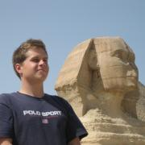
Brad Urani loves talking, tweeting and blogging about software almost as much as he loves creating it. He's a veteran of 5 startups and a frequent conference and meetup speaker. He lives in Santa Barbara, California where he preaches the wonders of open source as principal engineer at Procore.
The rise of PostgreSQL in the enterprise is paralleled by the rapid growth and acceptance of Cloud services, non-relational data stores, and highly scalable, distributed architecture. It is fortunate that just as we see increased attention on open source solutions, the community has gained a truly staggering number of core features and extensions. Phil loves to help people design healthy, modern, data-centric applications built squarely on PostgreSQL. The data landscape has expanded...

Chris Van Tuin, Chief Technologist for the Western US at Red Hat, has over 20 years of experience in IT and Software. Since joining Red Hat in 2005, Chris has been architecting solutions for strategic customers and partners with a focus on emerging technologies including IaaS, PaaS, and DevOps. He started his career at Intel in IT and Managed Hosting followed by leadership roles in services and sales engineering at Loudcloud and Linux startups. Chris holds a Bachelors of Electrical...
Soam Vasani created and works on the Fission framework at Platform9 Systems. He's also worked on Platform9's Kubernetes cluster deployment and management product. His past work includes distributed filesystems, and the GNU debugger and toolchain. He's interested in distributed systems, devops tools and frameworks, and programming languages.
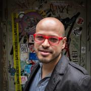
James Vasile has fifteen years experience as a user, developer, advocate and advisor in the free and open source software world. His expertise is in software licensing and community-building, as well as non-profit and small business startup. He focuses on free software and open source production, although his work and interests often take him far beyond the world of software. Much of what James does involves teaching people how to build successful businesses around free software and ensuring...
I have been contracting for DENX Software Engineering for a couple of years now. My primary responsibility is designing and implementing customer specific functionality. One important aspect of my work is leveraging the benefits of working inside the mainline Linux, U-Boot and Yocto projects, explaining our customers the benefits of pushing the newly produced code back into mainline and effectively doing the contributions. I am therefore heavily involved with both mainline U-Boot and Linux...
Luis Villa is the co-founder and general counsel of Tidelift, a startup devoted to making open source work better by supporting users and developers. Before Tidelift, he has had a varied career in open source, first in QA and engineering management, and then as an attorney at Mozilla, the Wikimedia Foundation, and Greenberg Traurig. At Columbia Law School, he was Editor-in-Chief of the Science and Technology Law Review and a Kent and Stone Scholar.
David is an AI/ML Engineer at DigitalOcean, where he’s dedicated to empowering developers to build, scale, and deploy AI/ML models in production environments. David brings deep expertise in building and training models for applications like NLP, data visualization, and real-time analytics. His mission is to help users build, train, and deploy AI models efficiently, making advanced machine learning accessible to developers of all levels.
I also have a background in storage drivers/...

Karsten has over 20 years leading and working hands-on in a range of Open Source projects in the private, public, academic, research, and non-profit spaces. His nearly three decade career in IT includes almost six years in three professional service organizations. Karsten is founder, partner, and Chief Community Architect for the consultancy Open Community Architects (OCA) https://OpenCommAr.ch

John Mark Walker is an open source product, community and ecosystem expert. He has spoken at numerous conferences on the subject of open source community, governance and business. He’s a well-respected pundit for opensource.com and linux.com and recently founded the Open Source Entrepreneur Network at https://osenetwork.com/
He works for Arm helping open source developers work with the Arm architecture and ecosystem.
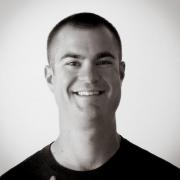
Christopher Webber is an Engineering Manager at Chef Software focused on building Operability into the next version of the Chef Automate platform. He is a long time organizer of DevOps Day LA. Chris has a broad background ranging from a long stint supporting academia to most recently running a software engineering team. Chris is proud to call Southern California his home.
I am an Enabler. Learn anything, lay the groundwork, optimize processes. So that projects can grow, teams can flourish, others can shine, and everyone feels great as a result.

Behan Webster is a Computer Engineer who has spent more than two decades in diverse tech industries such as telecom, datacom, optical, wireless, automotive, medical, defence, and the game industry writing code for a range of hardware from the very small to the very large. Throughout his career, his work has always involved Linux most often in the areas of kernel level programming, drivers, embedded software, board bring-ups, software architecture, and build systems. He has been involved in a...

Mike Weilgart has loved maths and computers all his life. Graduating high school at the age of 13, he thereafter worked in a variety of positions including software QA, calculus teacher, and graphic design, before resolving to put his love of computers to professional use as a Linux sysadmin and trainer. Mike currently consults at a Fortune 50 company as an automation specialist, and enjoys nothing more than training people to full mastery of their tools.
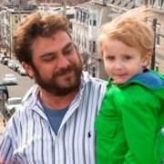
Langdon brings nearly 15 years experience in software development and systems architecture to his role as Red Hat's Developer and Platform Evangelist for Red Hat Enterprise Linux. In his role as RHEL Evangelist, Langdon fights tirelessly for the users to bridge development agility with production stability. Prior to Red Hat, he held roles as a Chief Operating Officer at start up vrevo and as Principal of his own consulting firm, FishJump. He lives in Boston, Massachusetts, US with his...
I am a 12 year student that has been learning "R" for the past year. I have spoken three times at different events. I have spoken twice at Devopsdays and more recently I did an Ignite talk at O'Reilly's Velocity conference in NYC 2015.

John Willis has worked in the IT management for over 40 years. He is researching DevOps, DevSecOps, IT risk, modern governance, and audit compliance. Previously, he was an Evangelist at Docker Inc., VP of Solutions for Socketplane (sold to Docker) and Enstratius (sold to Dell), and VP of Training & Services at Opscode, where he formalized the training, evangelism, and professional services functions at the firm. Additionally, Willis founded Gulf Breeze Software, an award-winning IBM...

Nate Willis is a typeface designer and consultant who has been an active member of the free-software community for longer than he cares to remember. He currently develops open-source fonts, works on type-related free-software projects, and advocates for open standards in font development and publishing. At least, by day. By night, he works with the libre graphics community and helps organize Texas Linux Fest, a community open-source event in Texas.
In years past, he wrote and edited...
George Wilson is a software engineer at Delphix where he works on filesystems for Delphix's database storage appliance. Most recently George has developed compressed arc, allocation throttle, single-copy arc, nop write feature, and enhancement for imablanced LUNs. Before joining Delphix, George was a senior member of the ZFS kernel development team at Sun Microsystems working on key features such as LUN expansion, Log Device removal, and Deduplication. He was also the tech lead for the...

Steve is a developer working on open source projects: Steve has been active in the Kubernetes and Mesos projects since 2015.
Steve is employed by the Cloud Native Applications business unit at VMware and is co-lead of the Kubernetes IoT and Edge Working Group.
Steve is a volunteer mentor for the Whitney High competitive robotics team. He has been doing home automation since before it was called the internet of things. In his spare time he likes to hang out at the 23b Hackerspace...
Cody Wood worked for a period of time in mining (not data) operations in the high desert of California. His initial interests in the security space started at a very early age, but he never really put any effort into pursuing those endeavors. About four years ago that all changed. After getting kicked out of a .NET programming bootcamp in Houston, TX he interned at a hackerspace and started working at the best company for aspiring inexperienced hackers (Whitehat Security). Specializing in...

I'm a software engineer for Puppet, where I'm currently working on our open source remote task runner Bolt. I graduated from Oregon State University with a BS in Computer Science in June 2016, where I worked as a Front-End Engineer for the OSU Open Source Lab. In my free time I enjoy hanging out with friends, hiking, experiencing new things, and enjoying a wide variety of podcasts, tv shows, blogs, books, and other media.
You can see more of my work at...

Jason is a technical writer and evangelist at Datadog, where he works to inspire developers and ops engineers with the power of metrics and monitoring. Previously, he was the community manager for DevOps & Performance at O’Reilly Media and a software engineer at MongoDB. He’s currently a co-organizer of DevOpsDays Portland and a member of the global DevOpsDays web team. When he’s not speaking at conferences or helping organize them, he likes to spend time on planes “travel hacking” and...

Peter Zaitsev is an entrepreneur and co-founder of Percona. As one of the foremost experts on Open Source strategy and database optimization, Peter leveraged both his technical vision and entrepreneurial skills to grow Percona from a two-person shop to one of the most respected open source companies in the business with staff members more than 350. Now Peter continues as a Board Member & Advisor in a range of open source startups. Peter is a co-author of High Performance MySQL:...
Tin Zaw has served as Verizon Digital Media Services’ director of global security solutions since 2015. He and his team provide managed and professional security services protecting their clients' web properties from exterior threats from the internet. He launched the services during his first year at Verizon and continues to grow the business each year.
Prior to joining Verizon, Tin led web and product security teams at AT&T and Intuit. He previously designed and...